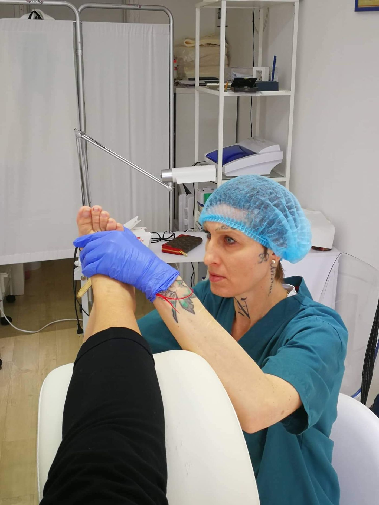
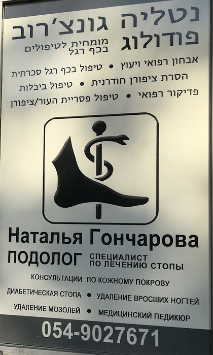

פדיקור רפואיMedical pedicure
לעור קשה, לסדקים ולציפורניים עבות.For hard skin, cracks and thick nails.
לתאם תורBook thisקונספט לדוגמה שנבנה עבור פדיקור רפואי, נטליה גונצ'רוב · זה אינו האתר הרשמי של העסקA sample concept built for Medical Pedicure, Natalia Goncharova · This is not the business’s official website
נטליה גונצ'רוב, פודולוגית. פדיקור רפואי בבלפור 3, חיפה.Natalia Goncharova, podologist. Medical pedicure at 3 Balfour Street, Haifa.

על הזכוכית: השם שלה, הטיפולים והטלפון.On the glass: her name, her treatments, her number.
שישה טיפולים מהשלט בכניסה, וגם מניקור.Six treatments from the sign at the entrance, and manicure too.
לעור קשה, לסדקים ולציפורניים עבות.For hard skin, cracks and thick nails.
לתאם תורBook thisהסרה של ציפורן שגדלה לתוך העור.Removing a nail that grows into the skin.
לתאם תורBook thisטיפול בכף הרגל לחולי סוכרת.Foot care for people with diabetes.
לתאם תורBook this
״פדיקור / מניקור״, כך כתוב מעל הכניסה.“Pedicure / manicure”, says the sign above the entrance.
חדר טיפולים אחד, ממש על המדרכה של בלפור.One treatment room, right on the Balfour pavement.
״היא מקסימה, עדינה ומסבירה כל צעד.״
“She’s lovely, gentle and explains every step.”
נטליה אשת מקצוע מעולה ומומחית אמיתית. טיפלה ביסודיות ביבלות קשות שלא קיבלו מענה בקופת חולים. מעבר לזה, היא מקסימה, עדינה ומסבירה כל צעד.
Natalia is an excellent professional and a real expert. She thoroughly treated stubborn corns the health fund hadn’t solved. Beyond that, she’s lovely, gentle and explains every step.
טופלתי אצל רופא עור, אורטופד, פדיקור רגיל והכל ללא הועיל. הגעתי לנטליה שזיהתה מיד את הבעיה. […] נטליה, שאפו על המסירות והידע הנרחב שיש לך.
I’d been treated by a dermatologist, an orthopaedist and a regular pedicurist, all with no result. I came to Natalia, who spotted the problem right away. […] Natalia, hats off to your dedication and your knowledge.
קיבלנו טיפול מקצועי, יסודי ועם המון סבלנות ורגישות. […] ממליצים מכל הלב לכל מי שמחפש/ת מישהי שאפשר לסמוך עליה בעיניים עצומות.
We got professional, thorough care, with lots of patience and sensitivity. […] We wholeheartedly recommend her to anyone looking for someone they can trust with their eyes closed.
מהממת מהממת מהממת, המקצועית ביותר […] ממליצה בחום.
Wonderful, wonderful, wonderful, the most professional […] I warmly recommend her.
אבחון רפואי וייעוץ, טיפול בכף רגל סכרתית, הסרת ציפורן חודרנית, טיפול ביבלות, פדיקור רפואי וטיפול בפטריית העור והציפורן. כך כתוב על השלט בדלת.Medical assessment and advice, diabetic foot care, ingrown nail removal, corn treatment, medical pedicure, and skin and nail fungus treatment. That is the list on the sign on the door.
כן. על השלט שמעל הכניסה כתוב ״פדיקור / מניקור״.Yes. The sign above the entrance says “pedicure / manicure”.
ראשון, שני, שלישי וחמישי 10:00–18:00, שישי 9:00–14:00. ברביעי ובשבת סגור.Sunday, Monday, Tuesday and Thursday 10:00–18:00, Friday 9:00–14:00. Closed on Wednesday and Saturday.
בטלפון 054-902-7671 או בוואטסאפ. אפשר גם לסמן למעלה איפה מציק, וההודעה מוכנה לשליחה.By phone on 054-902-7671 or on WhatsApp. You can also mark the spot above and the message is ready to send.
רחוב בלפור 3, חיפה3 Balfour Street, Haifa